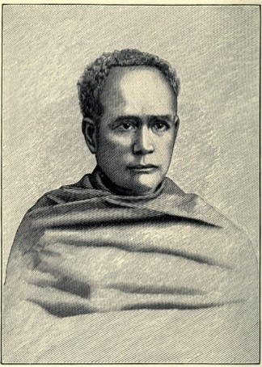
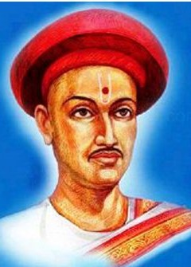
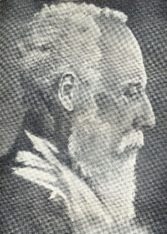
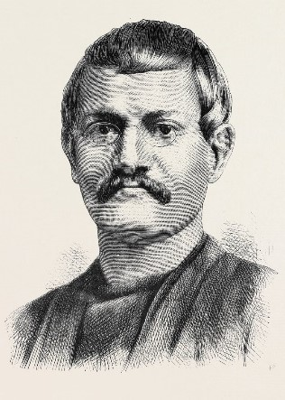
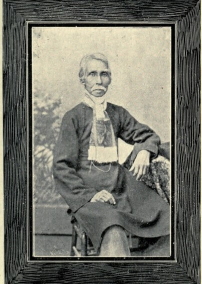
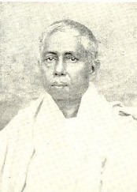
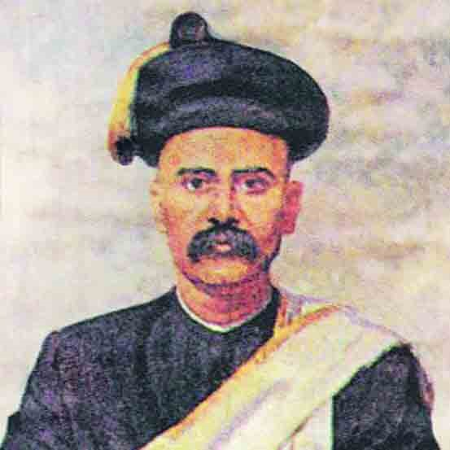

Comments
{{comments.comment}}
| Year | Personalities | Ideas & Belief | Contribution | |
|---|---|---|---|---|
| 1800s |
ISHWAR CHANDRA VIDYASAGAR
@Bengal
|
 |
Belief:
|
Movements:
|
| 1812-1846 |
BALSHASTRI JAMBHEKAR
@Bombay
|
 |
|
|
| 1817-1898 | SIR SYED AHMED KHAN |
Opposed youth involve in political activity-because it would invite hostility of British against Masses.
His enthu to promote educational interest is used by colonial as Divide and Rule- To propogate divergence of Hindu-Mus interest.
Belief:
“1st Acquire education, then catch up with Hindu counterparts”
|
"ALIGARH MOVEMENT"
Social reform:
|
|
| 1817-1905 |
DEBENDRANATH TAGORE
(Father of Rabindranath)
@Bengal
|
 |
Both Traditional Indian learning and Western thought
Support:
|
Who were Brahmo samaj members?
Followers of RRMRoy, Derozians, Ishwar vidyasagar, Ashwini Kumar datt
Tagore: Worked on 2 fronts
|
| 1838-1884 | KESHAB CHANDRA SEN |  |
(Inclusion of all religious teaching Strong views
against caste Open support to Intercaste marriage too Radical)
These qualities - not liked by Tagore
|
1878: Marriage to his 13yr Daughter to Maharaj Cooch Behar- with orthodox Hindu rituals caused split in samaj - Keshab accused of authoritarianism
|
| 1878 |
|


|
Brahmo's doctrine of faith -
Belief: Reason, Truth, Moral
|
|
| 1823-1892 |
GOPALHARI DESHMUKH
@Maharastra
|
Belief:
Rational Principle, Modern, Humanistic, Secular
|
Wrote against evil of caste
“If religion doesn’t sanction social reform then change the religion”
|
|
| 1847-1933 | ANNIE BESANT | Did much for Cause of Women education |
|
|
| 1856-1915 |
GOPAL GANESH AGARKAR
@Maharastra
|
 |
|
Co-founder of:
(Other founders: Thilak, V Chiplunkar) |
Add your thoughts